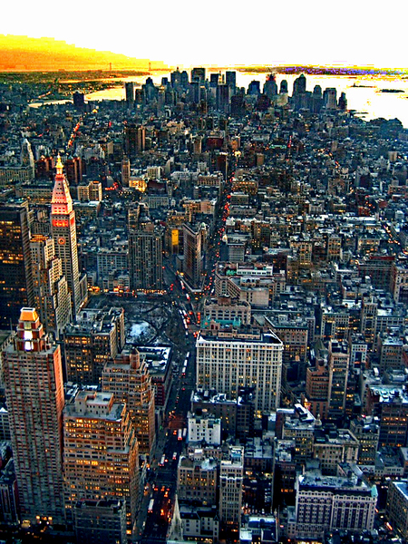

La siguiente imagen con neblina fue procesada con diversos algoritmos para remover los efectos de degradación.

¿Cuál de las siguientes imágenes procesadas consideras se le removió mejor la neblina y al mismo tiempo recupera sus colores más naturales?
Nota: Si aparecen las mismas imágenes se debe esperar al navegador que cargue la siguiente.
 |
 |